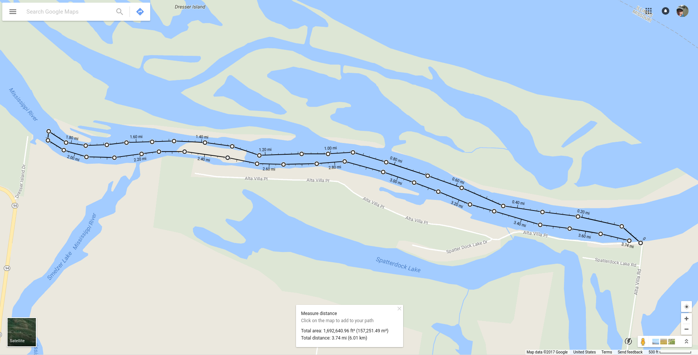

Car of Commerce Chute (Missouri River)
The Missouri River was notorious for destroying steamboat captains and steamboats. The Missouri River’s shallow ever-changing channel, snags and the velocity of the moving water spelled doom for many of the boats. In 1832 the Car of Commerce sank in the chute between Sioux Passage and Pelican Island.St. Louis County Parks
The trip began at Sioux Passage park. The initial plan was to paddle upstream through the Car of Commerce Chute and then around the other side of Pelican Island on the main channel of the Missouri River. Upon arriving at the boat ramp, we decided the current was a little too strong to paddle up the chute and went down the road to find a different put‑in. A sympathetic resident saw us looking around and offered to let us use his property to access the river.
Almost immediately on entering the water we encountered strong eddies and sideways currents. After fighting these for about a mile we traversed the rapids created by the barely submerged low‑water dam at the west end of the chute. This was probably the most exciting part of the entire trip as the back channel was very calm other than a little rough water created by the submerged wing dam at the east end.
The trip took about two hours and was overall enjoyable and moderately challenging. I would like to take the trip again and actually paddle up the chute and around the other side of the island for a little bit longer adventure.
The closest river gauge (St. Charles) was reading 19.41 ft with mostly clear skies and warm air temperature.


Pacific Palisades to Allenton Access (Meramec River)
Even in geological time, the Meramec is a very old river. It does not drain its northeastern section of the Ozark Plateau with the reckless abandon of a mountain stream. Instead, it meanders through the landscape in a countless succession of bends, riffles, and placid slow stretches, each of which is another small step in the Meramecs’ eight hundred foot decent from the Ozark Plateau to the Mississippi River.Ozark Outdoors Meramec History
Yet another fun day on the Meramec. Most of the paddlers I know and myself have done this run more times than we care to count, but it's always enjoyable and very convenient. The take‑out is Allenton Public Fishing Access across the highway from Six Flags and the put‑in is just a few miles up the outer road across from the Missouri Eastern Correctional Center, making for a pretty short shuttle.
Since this is such a familiar run, I neglected to record much environmental data. I believe the air temperature was in the mid 80's and the sky was mostly clear. There hadn't been much rain so the river was on the low side, but we didn't have to drag the boats at all.


Brickhouse Slough (Mississippi River)
Viewed from the limestone bluffs of Illinois high above the Mississippi River, the glow of the small light, a half-mile away on the Missouri shore, appears as two; one atop the weathered pole, the other a reflection on the stained water of Brick House Slough.Larry Reid for Advantage News
This trip was a short paddle on Brick House Slough, a back channel on the Mississippi River. We put in at the gravel ramp on Alta Villa Road off Highway 94 and paddled up to the causway that accesses Dresser Island.
Another trip either putting in at the Dresser Island causeway or portaging over it is certainly in order. This area is surprisingly peaceful considering it's proximity to Alton. The surrounding area is not heavily developed and the trees on the island do a pretty good job of blocking out the Great River Road on the Illinois side of the river. There also seems to be a pretty sizeable population of fish.
The nearest river gauge (Alton) read 6.28ft at 11:30 AM. The air temperature was just under 90℉ and there were very few clouds in the sky. There's hardly any shade on this route, so take the sun into account. There was no sign of the small island that the path on the map crosses.
